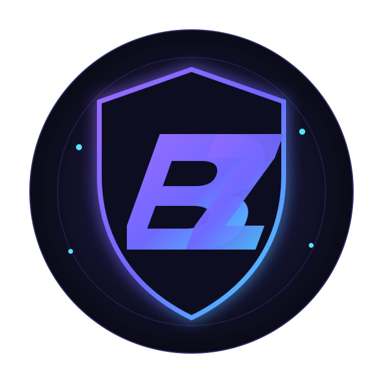

ANTES
Você persegue a informação.
- TeamSpeak + Discord + sites + planilhas
- Alguém precisa lembrar de conferir
- Dados sem contexto operacional
- PT esperando resposta
- Boss, player e Bazaar em lugares diferentes
TSWEB?PLANILHACHAT
O DZbot transforma seu Discord em uma central de inteligência para sua guild ou PT — com monitoramento, bosses, Bazaar, skills, mortes, rankings e alertas no mesmo ambiente onde seu time já se comunica.

Sua comunicação evoluiu. Sua inteligência também precisa evoluir.
Exemplos visuais baseados nos fluxos reais do DZbot.
Sem obrigar a PT a aprender mais uma interface.
Eventos relevantes deixam de depender de memória e consulta manual.
Informação organizada para a realidade da sua guild ou PT.
Os módulos podem ser combinados conforme a necessidade da operação. Não existe tabela pública de preço: cada implantação recebe proposta personalizada.
Veja online/offline, level, vocação, guild, sessão e histórico sem sair do Discord.
Disponível por composiçãoOrganize aliados, inimigos e personagens em observação com contexto por servidor.
Disponível por composiçãoAdicione uma guild inteira e acompanhe sua movimentação de forma centralizada.
Disponível por composiçãoReceba eventos de mortes e progressão sem depender de consultas manuais.
Disponível por composiçãoTransforme dados soltos em um dossiê de personagem útil para decisão.
Disponível por composiçãoReúna atividade, alvos e sinais operacionais para momentos de coordenação.
Disponível por composiçãoIdentifique sinais de movimentação coletiva e mudanças de atividade.
Disponível por composiçãoAcompanhe evolução, performance e rankings de forma organizada.
Disponível por composiçãoContexto histórico e operacional para bosses importantes do RubinOT.
Disponível por composiçãoSinais, janelas e níveis de atenção sem inventar certeza onde não existe.
Disponível por composiçãoFiltre e acompanhe oportunidades do Bazaar RubinOT com monitoramento e alertas.
Disponível por composiçãoSkills por vocação e ranking quando a fonte oferece cobertura suficiente.
Disponível por composiçãoUtilidades para reduzir atrito e manter a comunidade ativa no Discord.
Disponível por composiçãoApoio à organização de eventos, atividades e rotina da PT ou guild.
Disponível por composiçãoAmbiente isolado por servidor, canais definidos e configuração sob medida.
Disponível por composiçãoO DZbot conecta tracking, vocação, level, guild, skills, ranking e histórico quando a fonte oferece dados confiáveis.
United Knowledge • Malveria
Cada servidor recebe configuração adequada ao uso, com composição de módulos e canais definida para a realidade da guild ou PT.
Entendemos sua operação, seu servidor e o que você quer acompanhar.
Selecionamos os módulos e desenhamos a experiência no Discord.
O ambiente é configurado com isolamento por servidor.
Seu Discord passa a concentrar monitoramento, alertas e inteligência.
Transforme seu servidor em uma experiência premium, organizada e orientada por inteligência.
Orçamento personalizado • sem preço público • composição por necessidade